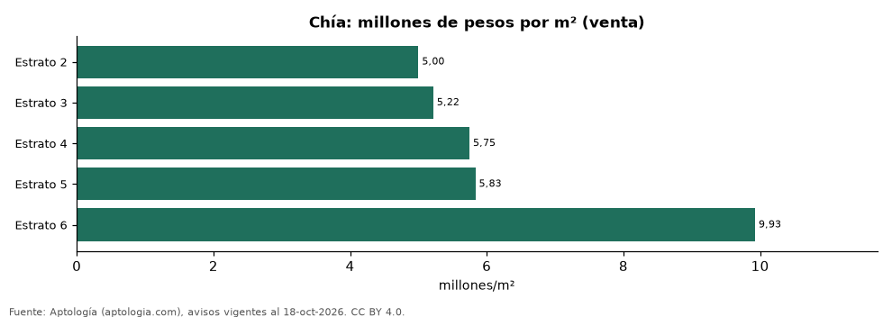

Precio de los apartamentos en venta en Chía por estrato: m², tamaño y habitaciones (octubre 2026)
Estudio con datos abiertos (CC BY 4.0). Versión original: https://github.com/elbroker/aptologia-datos/tree/main/estudios/precio-de-venta-apartamentos-por-estrato-chia-2026 · DOI: 10.5281/zenodo.23498968
En Chía el metro cuadrado de un apartamento en venta cuesta en la mediana 5,00 millones de pesos en estrato 2 y 9,93 millones de pesos en estrato 6, 2,0 veces más. El precio total mediano va de 250 millones de pesos a 1.880 millones de pesos según el estrato.
Resumen: analizamos 1.483 apartamentos en venta en Chía con estrato declarado.
Actualizado: 18 de octubre de 2026 (datos del 18 de octubre de 2026) · Próxima actualización: mensual.

Resumen
| Indicador | Valor |
|---|---|
| m², estrato 2 | 5,00 millones de pesos |
| m², estrato 6 | 9,93 millones de pesos |
| Diferencia | 2,0 veces |
| Avisos | 1.483 |
Precio de venta por estrato
| Estrato | Precio (mediana) | Millones por m² | Área mediana (m²) | 1 hab. | 2 hab. | 3 o más hab. | Avisos |
|---|---|---|---|---|---|---|---|
| 2 | 250 millones de pesos | 5,00 | 50 | — | — | — | 50 |
| 3 | 265 millones de pesos | 5,22 | 50 | 260 millones de pesos | 260 millones de pesos | 277 millones de pesos | 652 |
| 4 | 420 millones de pesos | 5,75 | 72 | 322 millones de pesos | 350 millones de pesos | 490 millones de pesos | 606 |
| 5 | 480 millones de pesos | 5,83 | 92 | — | 460 millones de pesos | 510 millones de pesos | 116 |
| 6 | 1.880 millones de pesos | 9,93 | 184 | — | — | — | 48 |
Medianas del precio pedido; las columnas por habitaciones muestran el precio total mediano; — indica menos de 30 avisos.
Preguntas frecuentes
¿Cuánto vale el metro cuadrado en Chía por estrato? De 5,00 millones de pesos (estrato 2) a 9,93 millones de pesos (estrato 6) en la mediana de octubre de 2026.
¿Cuánto cuesta un apartamento en estrato 4 en Chía? 420 millones de pesos en la mediana.
Metodología
- Fuente: exportes nocturnos de la base de datos de Aptología (aptologia.com) del 18 de octubre de 2026: avisos vigentes de vivienda en portales inmobiliarios de 13 países, recogidos por Aptología y vistos en línea entre el 11 y el 18 de octubre de 2026. Corte: 18 de octubre de 2026.
- Depuración: se eliminan duplicados exactos (misma ciudad, zona, tipo, precio, moneda, área, habitaciones y baños) y los precios fuera del percentil 1–99 de cada país, operación, moneda y tipo; el precio por m² usa solo avisos con área declarada entre 12 y 2.000 m² y también se recorta al P1–P99.
- Qué se mide: precios pedidos (publicados), no precios de cierre. En arriendo, el canon mensual sin administración, gastos comunes ni condominio.
- Muestra mínima: cada cifra publicada se apoya en al menos 30 avisos; las celdas con menos se omiten.
- Colombia: Precios en pesos colombianos, sin conversión de moneda.
- Limitaciones: la cobertura depende de los portales que recorre Aptología en cada país y es mayor en las ciudades grandes y en los segmentos medio-alto y alto; el área es la que declara el aviso, sin verificar; los nombres de zona vienen de los portales.
- Privacidad: solo se publican agregados; no se publica ningún dato personal, enlace a avisos ni nombre de anunciante.
- Datos abiertos: datos.csv, licencia CC BY 4.0.
Cómo citar
Pinzón Pineda, D. M. (2026). Precio de los apartamentos en venta en Chía por estrato: m², tamaño y habitaciones (octubre 2026). Aptología (aptologia.com). https://github.com/elbroker/aptologia-datos/tree/main/estudios/precio-de-venta-apartamentos-por-estrato-chia-2026. Datos: datos.csv, licencia CC BY 4.0.